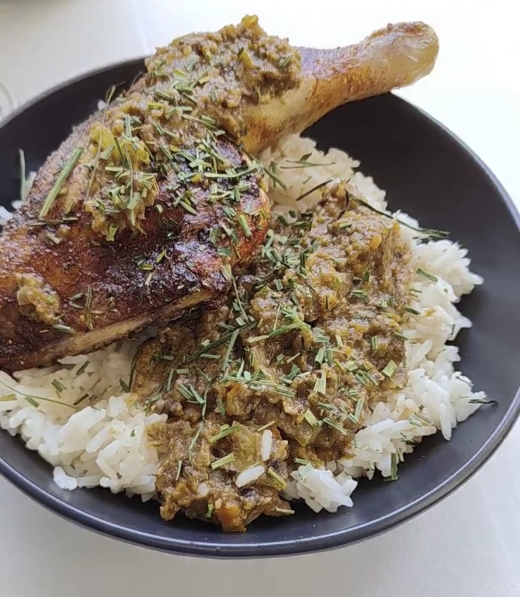

ORIENTAL
Ramen reconfortante con huevos cocidos al punto perfecto, setas shiitake y lonchas de jamón doradas a la plancha. Todo servido en un caldo sabroso y bien condimentado que acaricia el paladar en cada cucharada. ¡Un plato lleno de sabor, ideal para los amantes de la cocina oriental!
MEXICAN FOOD
Llena de vida y carácter, la comida mexicana cautiva con cada detalle. Sus platos son una invitación a disfrutar de sabores únicos y auténticos que nunca dejan de sorprender. ¡Una experiencia que te hará volver por más!
Tacos de Birria
Carne tierna, marinada con especias auténticas, envuelta en una tortilla caliente. Los tacos de birria son una explosión de sabor que te transporta a la esencia de la cocina mexicana. ¡Irresistibles y llenos de historia!
Tacos de langostinos
Langostinos jugosos, perfectamente sazonados y servidos en una tortilla suave. Cada bocado es una fusión de frescura marina y sabor único que te hará sentir junto al océano. ¡Un manjar digno de probar!
Arepas de Costillar
Costillar tierno y jugoso, acompañado de la suavidad de una arepa recién hecha. Una combinación perfecta de sabores que resalta lo mejor de la cocina tradicional, ¡un plato que te enamorará desde el primer bocado!
CARNAZAS
Jugosas, llenas de sabor y preparadas con dedicación, nuestras carnazas son una delicia para los amantes de lo mejor de la parrilla. Cada corte y preparación celebra la pasión por lo auténtico. ¡Disfruta la perfección en cada mordida!
Chuleton con patatas
Un chuletón tierno y jugoso, acompañado de crujientes patatas que completan esta deliciosa combinación. La mezcla perfecta de carne de calidad y guarnición, para un plato lleno de sabor y abundancia. ¡Una auténtica joya gastronómica!

Muslamen de Pollo con salsa
Muslo de pollo jugoso, dorado a la perfección y acompañado de salsas que realzan su sabor. Una combinación que ofrece un balance perfecto entre ternura, especias y un toque delicioso de cada salsa. ¡Una experiencia para los amantes del buen comer!
Cachopo XL
Filetes de carne empanados y rellenos, crujientes por fuera y tiernos por dentro, acompañados de una generosa porción de jamón y queso. El cachopo XL es una verdadera explosión de sabor y tamaño, ideal para los más hambrientos. ¡Una experiencia para compartir!
DEL MAR
Directo desde el océano a tu mesa, nuestros platos del mar están llenos de frescura y sabor. Cada bocado captura la esencia del mar, con preparaciones que realzan su naturaleza única.
Ostras frescas, acompañadas de una selección de salsas que realzan su sabor natural. Desde el toque cítrico hasta el picante suave, cada salsa ofrece una nueva experiencia para el paladar. ¡Una explosión de frescura y creatividad en cada concha!
BURGUERS
Con combinaciones únicas, ingredientes frescos y el punto perfecto en cada mordida, nuestras burgers redefinen lo clásico. Una explosión de sabor que siempre deja ganas de repetir. ¡Porque una buena burger nunca falla!
Burguer de pollo
Un filete de pollo empanado con un sazón diferente a lo que hayas probado, acompañado de los ingredientes frescos que hacen de esta burger una opción irresistible. Cada bocado ofrece una mezcla de textura crujiente y sabor jugoso. ¡La burger de pollo empanado que te conquistará!
Burguer de Costillar
Costillar tierno desmenuzado, jugoso y marinado, servido en un pan suave y acompañado de ingredientes frescos. Una combinación que fusiona lo mejor de la carne a la parrilla con la comodidad de una burger. ¡Un placer para los amantes del buen sabor!
CLASIC
Platos que nunca pasan de moda, preparados con el toque perfecto que los hace inolvidables. En cada receta encontrarás la esencia de lo tradicional, transformada en una experiencia única. Lo clásico, como debe ser.
Sopa de Cebolla
Un caldo rico y aromático con cebolla caramelizada, cubierto con queso fundido y pan crujiente. La sopa de cebolla es el abrazo reconfortante que tu paladar necesita, perfecta para cualquier ocasión. ¡Una tradición llena de sabor!